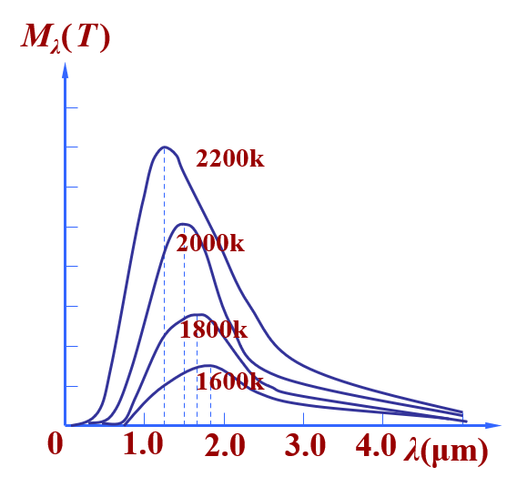
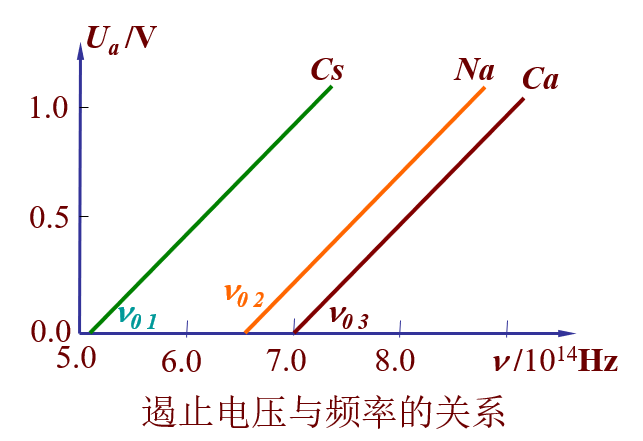
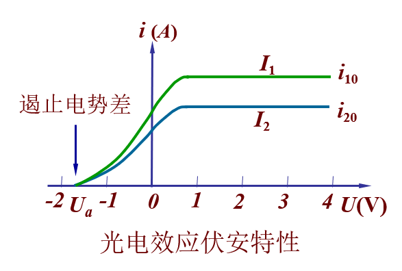
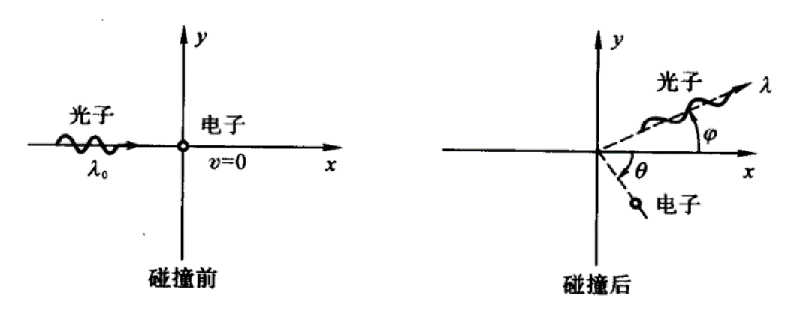
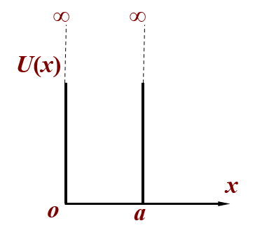
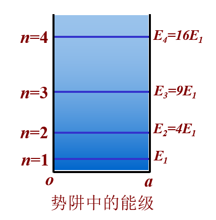
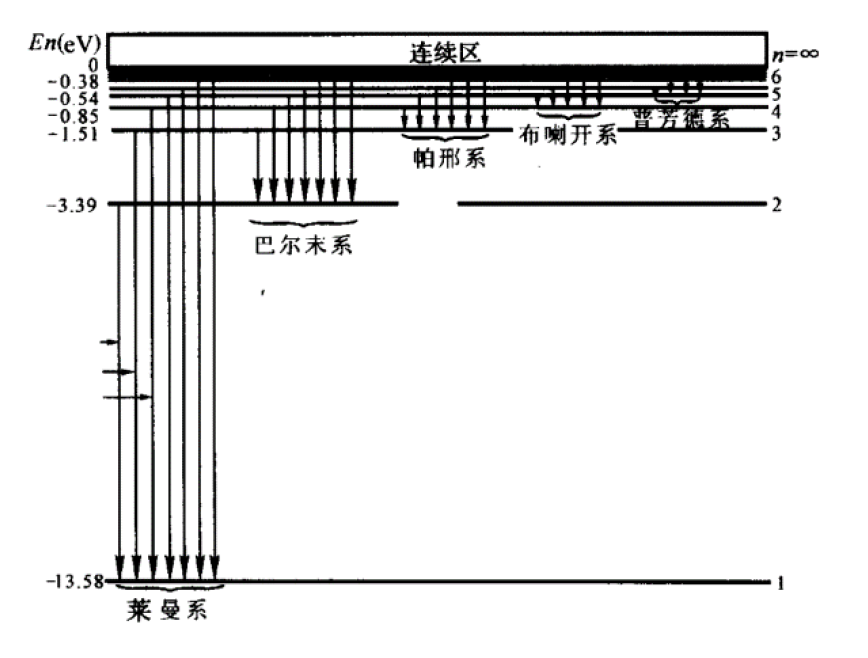

量子力学部分⚓︎
约 2327 个字 预计阅读时间 12 分钟
电磁辐射的量子性⚓︎
黑体辐射⚓︎
- （热）辐射：物体内部因带电粒子热运动发射电磁波的现象。物体发射辐射能的同时也在吸收辐射能。
- 单色辐出度\(M_\lambda(T)\)：单位时间、单位表面积上发射的波长在 \(\lambda\) 到 \(\lambda + \text{d}\lambda\) 范围内的辐射能为 $ \text{d}M_\lambda\(，则：\)M_\lambda(T) = \dfrac{\text{d}M_\lambda}{\text{d}\lambda}\(（关于\)T, \lambda$的函数）
-
辐射出射度 \(M(T)\)：单位时间、单位表面积上发射全波长范围内的辐射能，公式为：\(M(T) = \int_0^{+\infty}M_\lambda(T)\text{d}\lambda\)
-
入射进来的能量 = 被吸收的能量 + 被反射的能量 + 透射过去的能量
- 对应的占比为吸收系数\(\alpha(\lambda, T)\) 与反射系数\(r(\lambda, T)\)，它们是关于 \(\lambda, T\) 的二元函数
- 对于不透明物体，\(\alpha(\lambda, T) + r(\lambda, T) = 1\)
- 对应的占比为吸收系数\(\alpha(\lambda, T)\) 与反射系数\(r(\lambda, T)\)，它们是关于 \(\lambda, T\) 的二元函数
-
绝对黑体
- 入射进来的能量被全部吸收的物体，满足 \(\alpha_B(\lambda, T) = 1\)
- 基尔霍夫定律：任何物体的单色辐出度与单色吸收系数的壁纸都满足：\(\dfrac{M_\lambda(T)}{\alpha(\lambda, T)} = M_{B\lambda}(T)\)
-
绝对黑体的辐射定律：
- 斯特藩 - 玻尔兹曼定律：\(M_B(T) = \int_0^{+\infty}M_{B\lambda}(T)\text{d}\lambda = \sigma T^4\)，其中：
- \(M_B(T)\)：特定温度下绝对黑体的总辐射能量
- \(\sigma\)：常数，\(\mathtt{5.67 \times 10^{-8} W/m^2 \cdot K^4}\)
-
维恩位移定律：\(T\lambda_m = b\)，其中
- \(\lambda_m\)：下图中曲线峰值对应的波长
- \(b\)：常数，\(\mathtt{2.898 \times 10^{-3} m \cdot K}\)

- 斯特藩 - 玻尔兹曼定律：\(M_B(T) = \int_0^{+\infty}M_{B\lambda}(T)\text{d}\lambda = \sigma T^4\)，其中：
光电效应⚓︎
- 光子：电磁辐射在空间传播的离散的量子形式（被视为一种例子）
- 单个光子的性质：
-
光电效应
- 基本现象：在光的照射下，电子从金属表面逸出
- 一个电子获得一个光子的能量，首先用于克服表面阻力所需的逸出功\(A\)，剩下的能量作为最大初动能\(E_{km}\)，公式为：\(h\upsilon = E_{km} + A\)
- 加上反向电压可以遏止光电子的运动，加遏止电压\(U_a\) 时，光电流为 0，对应公式为：\(E_{km} = e|U_a|\)
- 遏止电压与频率的关系：
- 当光频率 = 截止频率（又称红限频率）\(\upsilon_0\) 时，电子获得的能量 <= 逸出功，无光电子激发或激发的光电子没有动能，因而无光电流，对应公式为：\(h\upsilon_0 = A\)
- 随着电压增大，光电流增大至饱和值，该值与激发的光电子数量有关（等于光子数量
） 。光子数量 \(n\) 与光强 \(I\) 的关系为：\(I = nh\upsilon\)

康普顿效应⚓︎
- 现象：单色 X 射线投射到石墨晶体及其他材料上时，散射光线除了有与入射线波长 \(\lambda_0\) 相同的成分外，还有波长大于 \(\lambda_0\) 的部分，且波长变化 \(\Delta \lambda = \lambda - \lambda_0\) 随散射角 \(\varphi\) 增大而增大，并与 \(\lambda_0\) 及物质无关。
-
解释：电子与光子碰撞模型：
- 入射光子与电子发生碰撞（假设是弹性碰撞
） ，光子部分能量转化为电子动能 - 能量守恒：\(h\upsilon_0 + m_e c^2 = h\upsilon + mc^2\)
- 动量守恒：\(\begin{cases}\dfrac{h\upsilon_0}{c} = \dfrac{h\upsilon}{c} \cos \varphi + mv \cos \theta \\ 0 = \dfrac{h\upsilon}{c}\sin \varphi - mv \sin \theta \end{cases}\)
- 其中，\(m_e\) 为电子静止质量，\(m\) 为电子相对论质量
- 入射光子与电子发生碰撞（假设是弹性碰撞
-
常考物理量
-
波长改变量与散射角的关系：\(\Delta \lambda = \lambda - \lambda_0 = \dfrac{h}{m_e c}(1 - \cos \varphi)\)，其中：
- \(\dfrac{h}{m_e c} = \mathtt{0.0024nm}\)：电子的康普顿波长
- 散射角 \(\varphi\) 可取到 \(180\degree\)
-
电子获得的动能：\(E_k = h\upsilon_0 - h\upsilon\)
-
量子力学简介⚓︎
德布罗意波⚓︎
实物粒子同样具有波粒二象性，波长 \(\lambda\) 由动量决定，频率 \(\upsilon\) 由能量决定，公式为：
不确定性理论⚓︎
- 动量与位置的不确定性关系：\(\Delta x \Delta p_x \ge \dfrac{h}{4\pi}\)
- 能量和时间的不确定性关系：\(\Delta E \Delta t \ge \dfrac{h}{4\pi}\)
- 微观粒子的（位置和动量）/（处于某个状态的时间与能量）不可能同时准确测定
波函数⚓︎
-
波函数\(\Psi(x, y, z, t)\) 是空间与时间的函数，蕴含了粒子的运动状态。
- 当粒子运动状态不随时间变化时，波函数为定态波函数\(\psi(x, y, z)\)
- 波函数的值可能是复数，它的模长平方 \(|\Psi(x, y, z, t)|^2 = \Psi^* \Psi\) 代表粒子在对应点出现的概率密度
- 波函数的要求：
- \(\Psi(x, y, z, t)\) 是单值、连续、有限的函数
- 归一化条件：\(\iiint\limits_V \Psi^* \Psi \text{d}V = 1\)
-
薛定谔方程：量子力学的基本方程，其正确性只能由实验检验
\[ i\dfrac{h}{2\pi}\Psi(\mathbf{r}, t) = [-\dfrac{h}{4\pi m}(\dfrac{\partial^2}{\partial x^2}+\dfrac{\partial^2}{\partial y^2}+\dfrac{\partial^2}{\partial z^2})]\Psi(\mathbf{r}, t) \]- 定态薛定谔方程：当势能 \(U\) 与时间无关，而只是坐标的函数时，可将波函数分离变量，最终得到：
\[ \dfrac{\partial^2 \Psi}{\partial x^2}+\dfrac{\partial^2 \Psi}{\partial y^2}+\dfrac{\partial^2 \Psi}{\partial z^2} + \dfrac{8\pi^2 m}{h^2}[E - U(\mathbf{r})]\psi(\mathbf{r}) = 0 \] -
一维无限深势阱：粒子在某一区间内势能为 0，其余区间势能为无限大，由薛定谔方程，该粒子只在该区间出现。
- 一维无限深势阱的势能分布：\(U(x) = \begin{cases}0 & 0 < x < a \\ \infty & x \le 0 \text{ or } x \ge a\end{cases}\)
-
粒子的运动特征：
- 能量的量子化：\(E_n = n^2 \dfrac{h^2}{8ma^2}, n = 1, 2, 3 \dots\)，\(n\) 为量子数
- 粒子的最小能量 \(E_1\) 称为零点能
- 粒子在势阱的不同位置中出现的概率：按量子力学结论，粒子出现的概率在势阱内有一定分布。但当 \(n\) 趋于无限大时，\(P(x)\) 振荡过密，可近似看作均匀分布
一维波函数分析
题目
已知未归一化的波函数，求归一化常数、概率密度函数、最大概率密度位置、某区间概率等
核心：\(\psi^2(x)\) 是例子出现在 \(x\) 处的概率密度
- 令 \(\int_{-\infty}^{+\infty} \psi^2(x) \text{d}x = 1\)，求出归一化常数 \(A\)
- 然后代入该常数得到波函数，进而得到概率密度函数 \(f(x) = \psi^2(x)\)
- 最大概率密度位置通过对 \(f(x)\) 求导得到，区间 \((a, b)\) 出现的概率为 \(\int_a^b f(x)\text{d}x\)
氢原子及其结构⚓︎
玻尔氢原子理论⚓︎
-
玻尔理论
- 原子存在一系列具有确定能量的稳定状态（定态）
- 原子处于定态时，电子在稳定的圆形轨道上运动，其角动量 \(L\) 必为 \(\dfrac{h}{2\pi}\) 的整数倍，即 \(L = nvr = n\dfrac{h}{2\pi}, n = 1, 2, 3\)，其中 \(n\) 为量子数
-
氢原子的轨道半径是量子化的：
\[ \dfrac{1}{4\pi\varepsilon}\dfrac{e^2}{r^2} = m\dfrac{v^2}{r} \rightarrow r_n = n^2 \dfrac{\varepsilon_0 h^2}{\pi me^2} \quad n = 1, 2, 3 \dots \]其中 \(r_1\) 称为玻尔半径\(a_0\)，从而 \(r_n = n^2a_0\)
-
氢原子的能量是量子化的：
\[ E_n = -\dfrac{1}{n^2}\Big(\dfrac{me^4}{8\varepsilon_0^2 h^2}\Big) \quad n = 1, 2, 3 \dots \]其中 \(n = 1\) 称为基态能级，\(E_1 = \mathtt{-13.6eV}\)，\(E_n = \dfrac{E_1}{n^2}\)
-
氢原子光谱
-
从高能级 \(n_i\) 跃迁到低能级 \(n_f\) 时，发射一个光子，其波长为
\[ \dfrac{hc}{\lambda} = E_i - E_f \quad \text{or} \quad \dfrac{1}{\lambda} = R(\dfrac{1}{n_f^2} - \dfrac{1}{n_i^2}) \]其中里德伯常数\(R = -\dfrac{E_1}{hc}\)
-
氢原子光谱的线系：各个高能级向同一低能级跃迁时辐射的谱线集合
- 向 \(n=1\) 跃迁：莱曼系
- 向 \(n=2\) 跃迁：巴耳末系
 -
氢原子光谱的系限：由 \(n = \infty(E = 0)\) 向线系最低能级跃迁辐射的蒲县，其波长（极限波长）是线系中最短的
- 若被激发到的最高能级为 \(n\) 级，则能够发射的谱线数为 \(\dfrac{n(n - 1)}{2}\)
-
量子力学氢原子理论⚓︎
-
量子数
- 主量子数 \(n\)
- 取值：\(1, 2, 3, \dots\)
- 量子化：\(E_n = -\dfrac{1}{n^2}\Big(\dfrac{me^4}{8\varepsilon_0h^2}\Big)\)（电子能量）
- 角量子数 \(l\)
- 取值：\(0, 1, 2, \dots, n - 1\)
- 量子化：\(L = \sqrt{l(l+1)}\dfrac{h}{2\pi}\)（电子绕核旋转的角动量）
- 磁量子数 \(m_l\)
- 取值：\(0, \pm 1, \pm, \dots, \pm l\)
- 量子化：\(L_z = m_l\dfrac{h}{2\pi}\)（轨道角动量在指定的 \(Z\) 轴的分量）
-
因此，一组量子数 \(n, l, m_l\) 确定了一个满足要求的波函数，氢原子中电子的波函数可以写为：
\[ \psi_{n, l, m_l}(r, \theta, \varphi) = R_{n, l}(r)\Theta_{l, m_l}\Psi_{m_l}(\varphi) \]
- 主量子数 \(n\)
-
电子自旋
- 现象
- 轨道磁矩的最小值称为玻尔磁子 \(\mu_B = \dfrac{eh}{4\pi m} = \mathtt{9.27 \times 10^{-24} A \cdot m^2}\)
- 自旋磁矩和自旋角动量的关系：\(\mu_s = -\dfrac{e}{m}S\)
- 物质的磁性由电子轨道磁矩和自旋磁矩决定
- 自旋磁量子数 \(m_s\)，取值：\(\pm \dfrac{1}{2}\)
- 自选角动量 \(S\) 在外磁场的分量 \(S_z = m_s \dfrac{h}{2\pi}\)
-
概率密度
- \(|\psi_{n, l, m_l}(r, \theta, \varphi)|^2\) 代表电子出现在 \((r, \theta, \varphi)\) 处的概率密度
- 径向概率密度\(r^2|R_{n, l}(r)|^2\) 代表电子出现在 \(r\) 处的概率密度
激光和固体能带⚓︎
目前不清楚考不考，等我做了历年卷再说。
评论区